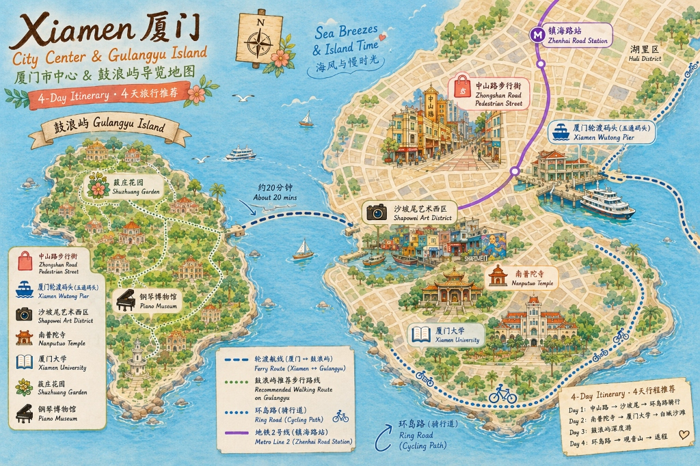

小三通交通銜接 (Trip.com 一條龍套票)
台南直飛金門，搭配套票專屬接駁車至水頭碼頭，實現免行李煩惱、無縫對接直達廈門。
台南
機場
機場
金門
機場
機場
水頭
碼頭
碼頭
廈門
五通
五通
立榮航空 B78981
09:40 台南起飛，10:30 抵達金門。
套票專車接駁
專車於金門機場外迎賓，直達水頭碼頭（車程約 15 分鐘）。
金廈客輪航線
12:30 水頭碼頭出發，13:00 抵達廈門五通。
- 一條龍優勢 Trip.com 小三通套票包含「台南-金門機票 + 機場至碼頭接駁專車 + 金廈船票」，免去分段購票的繁瑣手續。
- 去程時間表 台南起飛 (09:40) ➡ 抵達金門 (10:30) ➡ 專車接駁 ➡ 船班啟航 (12:30) ➡ 抵達廈門五通 (13:00)，極速便捷。
- 回程時間表 可彈性選擇 7/19 船班：11:30 船 ➡ 12:00 金門，銜接 14:30 飛台南（最推薦，金門遊玩時間充裕）；或 08:30 船 ➡ 11:20 飛台南。
- 抵達廈門 五通碼頭 13:00 入境通關，下午有充足時間辦理入住並展開首日行程，出遊更從容。
廈門與金門行程
節奏以第一天安頓身心、第二天探索鼓浪嶼、第三天巡禮市區經典、第四天彈性返金門為主。
🗺️ 廈門市中心 & 鼓浪嶼導覽地圖
手繪風格的景點與交通路線圖（包含輪渡、地鐵與環島路騎行道），建議對照行程表使用。

Day 1
7/15 抵達廈門
台南出發直達廈門，午後悠閒漫步中山路
上午搭乘台南直飛金門航班，無縫銜接小三通船班，13:00 即抵達廈門五通碼頭。辦理飯店入住後，晚上悠閒漫步中山路步行街，品嚐在地沙茶烤肉與花生湯，欣賞經典騎樓夜景。
查看 Day 1 完整時間表規劃 (台南一條龍至廈門)
☀️ 上午時段｜台南機場出發 ➡ 直飛金門 ➡ 專車接駁碼頭
| 時間 | 行程 | 備註與說明 |
|---|---|---|
| 08:15 - 08:30 | 台南機場報到 | 直接前往台南機場（TNN）國內線櫃檯報到。台南市區出發交通極為輕鬆，省去遠赴高雄之苦。 |
| 08:30 - 09:40 | 行李託運、安檢候機 | 最晚於起飛前 30 分鐘完成報到。完成手續後於候機室安心等待登機。 |
| 09:40 - 10:30 | ✈️ 台南 ✈ 金門 | 搭乘立榮航空 B78981 航班，飛行時間僅約 50 分鐘，10:30 準時抵達金門尚義機場。 |
| 10:30 - 11:30 | 專車接駁至水頭碼頭 | 出關後尋找 Trip.com 套票指定的接駁車集合點。搭乘豪華專車前往水頭碼頭（約 15 分鐘車程）。 |
☀️ 中午時段｜水頭碼頭換票 ➡ 乘船赴廈門 ➡ 五通快速通關
| 時間 | 行程 | 備註與說明 |
|---|---|---|
| 11:30 - 12:30 | 碼頭取票與備戰 | 抵達水頭碼頭套票櫃檯憑證兌換船票，預留一小時在碼頭休息或在小鋪買些輕食點心。 |
| 12:30 - 13:00 | 🚢 金廈小三通出航 | 搭乘 12:30 船班橫跨金廈海峽，船程約 30 分鐘，預計 13:00 抵達廈門五通客運碼頭。 |
| 13:00 - 14:00 | 🛬 入境通關、前往市區 | 備妥台胞證辦理入境手續。通關後，由 5 號門搭乘計程車前往中山路市區飯店（約 30 分鐘）。 |
🌙 下午與晚間時段｜飯店入住休息 ➡ 中山路慢活逛街
| 時間 | 行程 | 備註與說明 |
|---|---|---|
| 14:00 - 16:00 | 🏨 飯店辦理入住與小憩 | 辦理飯店 Check-in，將行李放妥。因為提早抵達，下午可享有長達兩小時的舒適休息，消解舟車勞頓。 |
| 16:00 - 18:00 | 中山路周邊街區散步 | 漫步中山路步行街，觀賞極富閩南風情的騎樓與西洋折衷主義建築，感受廈門島內的悠閒午後。 |
| 18:00 - 21:00 | 🌃 騎樓夜景與在地美食晚餐 | 夜幕低垂，霓虹燈亮起。在中山路享用沙茶烤肉、土筍凍、花生湯與燒肉粽等閩南名小吃。 |
| 21:00 | 返回飯店早點休息 | 散步走回飯店，早早入眠，準備明天精采的鼓浪嶼浪漫一日遊。 |
Day 2
7/16 鼓浪嶼
琴島浪漫漫步，尋訪日光岩與萬國建築
提早於「嶼見廈門」微信小程序購票。登島後漫步萬國建築，挑戰鼓浪嶼最高點日光岩，再遊覽精緻的菽莊花園。傍晚返廈後前往八市享用海鮮饕餮大餐。
查看 Day 2 完整時間表規劃 (鼓浪嶼一日遊與八市晚餐)
☀️ 上午時段｜登島準備 ➡ 郵輪中心 ➡ 抵達三丘田碼頭
| 時間 | 行程 | 備註與說明 |
|---|---|---|
| 07:30 - 08:00 | 飯店早餐與出發 | 在中山路附近享用沙茶麵等早餐。搭乘地鐵 2 號線或計程車前往「廈門國際郵輪中心」（約 15 分鐘）。 |
| 08:00 - 08:50 | 抵達郵輪中心、安檢報到 | 重要：暑期遊客極多，務必提早 45-60 分鐘抵達。準備好台胞證進行人工或機器驗票。 |
| 08:50 - 09:20 | 🚢 廈鼓輪渡出航 | 搭乘預訂的 08:50 船班，由廈鼓碼頭前往鼓浪嶼「三丘田碼頭」，船程約 20 分鐘，沿途可觀賞海景。 |
☀️ 中午時段｜網紅景點打卡 ➡ 日光岩俯瞰 ➡ 龍頭路午餐
| 時間 | 行程 | 備註與說明 |
|---|---|---|
| 09:30 - 10:20 | 最美轉角與萬國建築群 | 下船後步行 5 分鐘抵達熱門打卡點「最美轉角」，沿途觀賞船屋、三一堂等極具異國風情的百年老建築。 |
| 10:20 - 12:00 | 🧗 挑戰日光岩景區 | 登頂鼓浪嶼最高峰「日光岩」（門票約 50 人民幣），鳥瞰整座琴島的紅色屋頂與四周蔚藍的廈門海峽。 |
| 12:00 - 13:30 | 🍽️ 龍頭路商業街午餐 | 前往龍頭路享用小吃，推薦品嚐葉氏麻糍、林氏魚丸湯、閩南土筍凍與海蠣煎，也可買些手信。 |
🌙 下午與晚間時段｜菽莊花園 ➡ 乘船返廈 ➡ 八市海鮮饕餮
| 時間 | 行程 | 備註與說明 |
|---|---|---|
| 13:30 - 15:30 | 🎹 菽莊花園與鋼琴博物館 | 面海而建的精緻江南園林（門票約 30 人民幣），內含極具規模的鋼琴博物館，漫步於海上石橋（四十四橋）。 |
| 15:30 - 16:30 | 🏖️ 港仔后沙灘踏浪 | 菽莊花園旁即是沙灘，可在此漫步、聽海浪，吹著涼爽的海風休息片刻。 |
| 16:45 - 17:30 | 🚢 乘船返回廈門本島 | 交通祕訣：17:30 後從三丘田碼頭開出的遊客船班，會直接停靠中山路正對面的「輪渡碼頭」，下船即達市區，省去轉車時間。 |
| 18:00 - 20:30 | 🦞 八市海鮮市場晚餐 | 前往最富市井氣息的「第八市場（八市）」，親自挑選新鮮海鮮請店家加工。推薦搭配阿吉仔餡餅與手撕雞。 |
| 21:00 | 返回飯店休息 | 散步走回飯店，早點休息，為第三天市區經典行程充電。 |
Day 3
7/17 廈門市區
古剎登高俯瞰，漫遊避風塢與雙子塔日落
精選廈門島內最具風味的經典路線。上午參拜千年古剎南普陀寺並眺望海景，漫步文青貓街；下午深度探索沙坡尾漁港避風塢與藝術西區；傍晚在環島路乘風騎行，並於演武大橋觀景平台邂逅海上絕美日落。
查看 Day 3 完整時間表規劃 (南普陀、沙坡尾與海上日落)
☀️ 上午時段｜千年古剎南普陀 ➡ 貓街文青巡禮
| 時間 | 行程 | 備註與說明 |
|---|---|---|
| 08:30 - 09:00 | 飯店早餐與出發 | 在中山路附近享用美味的閩南面線糊或土筍凍。隨後搭乘計程車或公交前往「南普陀寺」（車程約 15 分鐘）。 |
| 09:00 - 10:30 | ⛩️ 南普陀寺參拜與登高 | 免費入場（可在微信小程序提前預約）。參觀莊嚴的大雄寶殿，推薦沿後方五老峰步道登高，俯瞰廈門大學與雙子塔絕美海景。 |
| 10:30 - 11:30 | 🐈 頂澳仔貓街漫步 | 由南普陀寺步行約 10 分鐘即達。整條街充滿貓咪主題的塗鴉、雕塑與文創小店，非常適合拍照打卡。 |
☀️ 中午與下午時段｜沙坡尾避風塢 ➡ 藝術西區 ➡ 網紅下午茶
| 時間 | 行程 | 備註與說明 |
|---|---|---|
| 11:30 - 13:00 | 🍽️ 沙坡尾特色美食午餐 | 從貓街散步抵達沙坡尾避風塢（約 10 分鐘）。在避風塢老街或藝術西區挑選特色餐廳，品嚐閩南沙茶麵或在地海鮮排檔。 |
| 13:00 - 15:00 | 🎨 避風塢與藝術西區漫遊 | 漫步於古老的沙坡尾避風塢木棧道，感受老漁港與新文創的碰撞。參觀藝術西區的創意市集、手工藝店與極具個性的塗鴉牆。 |
| 15:00 - 16:00 | ☕ 網紅臨海咖啡廳下午茶 | 在沙坡尾選一家臨海的景觀咖啡廳，喝杯冰涼的特調飲品、吃塊精緻甜點，躲避午後最炎熱的日曬，享受慢節奏時光。 |
🌙 傍晚與晚間時段｜環島路騎行 ➡ 演武大橋日落 ➡ 經典薑母鴨晚餐
| 時間 | 行程 | 備註與說明 |
|---|---|---|
| 16:00 - 18:00 | 🚲 環島路海濱單車騎行 | 搭計程車前往環島路最美的「黃厝沙灘」（約 15 分鐘）。租一輛腳踏車，沿著環島路自行車道乘風騎行，吹著海風欣賞美麗的椰林海景。 |
| 18:00 - 18:45 | 🌅 演武大橋觀景台日落 | 傍晚來到鄰近世茂雙子塔的「演武大橋觀景平台」，漫步於與海平面幾乎齊平的橋面，觀賞極為浪漫的海上落日餘暉。 |
| 19:00 - 20:30 | 🦆 經典閩南薑母鴨晚餐 | 晚餐推薦造訪廈門著名的薑母鴨老店。砂鍋慢燉至骨肉分離、焦香入味的薑母香鴨肉，味道濃郁，極度下飯。 |
| 20:30 | 返回飯店休息 | 步行或搭車返回中山路飯店休息，充飽電力，迎接明天的仙氣植物園與傍晚小三通返金門行程。 |
Day 4
7/18 返回金門
悠遊植物園與曾厝垵，搭傍晚船班返金
上午造訪充滿仙氣的植物園，打卡多肉區。中午在曾厝垵文青漁村漫遊享用美食。下午回飯店取行李，不趕時間，搭乘 16:30 或 17:00 的傍晚船班回金門，晚上入住特色閩南民宿，享用金門風味晚餐。
查看 Day 4 完整時間表規劃 (植物園與曾厝垵、傍晚返金門)
☀️ 上午時段｜仙氣植物園 ➡ 巨大多肉區打卡
| 時間 | 行程 | 備註與說明 |
|---|---|---|
| 08:30 - 09:00 | 飯店早餐與出發 | 在飯店享用早餐，退房後將大件行李暫時寄放在飯店櫃檯，輕裝出發。 |
| 09:00 - 11:30 | 🌵 萬石植物園探索 | 漫步「廈門園林植物園」，打卡夢幻雨林噴霧（固定時段噴霧）與高聳的戶外沙地多肉植物區，拍攝仙氣質感美照。 |
☀️ 中午與下午時段｜文青曾厝垵 ➡ 下午茶 ➡ 回飯店取行李
| 時間 | 行程 | 備註與說明 |
|---|---|---|
| 11:30 - 14:00 | 🛍️ 曾厝垵漁村午餐漫遊 | 前往曾厝垵文創休閒漁村，這裡匯集了無數閩南風味小吃、文創商店。在此邊逛邊吃，悠閒享用午餐。 |
| 14:00 - 15:30 | ☕ 咖啡廳小憩與取行李 | 在環島路附近的文青海景咖啡廳享受慵懶下午茶。隨後搭計程車回中山路飯店領取寄放的行李. |
🌙 傍晚時段｜前往五通碼頭 ➡ 乘船回金門 ➡ 閩南民宿與風味餐
| 時間 | 行程 | 備註與說明 |
|---|---|---|
| 15:30 - 16:15 | 五通客運碼頭出發 | 搭乘計程車前往五通客運碼頭（車程約 30 分鐘）。 |
| 16:15 - 17:30 | 🚢 乘船金廈小三通 | 時間調整：不趕在中午回，改搭 16:30 或 17:00 的傍晚船班回金門（船程 30 分鐘）。出關手續快捷。 |
| 17:30 - 20:30 | 🏨 入住金門民宿與在地晚餐 | 搭接駁車或計程車至金門特色閩南古厝民宿辦理入住。晚餐享用在地金門酒糟牛肉麵或高粱酒嗆蟹。 |
Day 5
7/19 返回台南
晨遊金城老街買伴手禮，下午 14:30 套票飛台南
清晨慢步金城老街品嚐排隊熱廣東粥，悠閒採買貢糖、鋼刀伴手禮。中午前往機場，搭乘 14:30 飛機完美回抵台南。
查看 Day 5 完整時間表規劃 (金門漫活手信、套票航班直飛台南)
☀️ 上午與中午時段｜晨曦早餐 ➡ 慢逛老街採購 ➡ 前往機場登機
| 時間 | 行程 | 備註與說明 |
|---|---|---|
| 08:00 - 09:30 | 🥣 享用金門特色排隊早餐 | 在閩南民宿睡到自然醒，前往金城鎮老街，排隊享用道地的無米廣東粥、油條與香脆的閩式燒餅。 |
| 09:30 - 12:30 | 🛍️ 模範街與邱良功牌坊大採購 | 極佳銜接：選擇 14:30 飛台南的 B78992 班次，早上擁有長達 3 小時超充裕的購物時間！買足貢糖、牛肉乾與鋼刀手信。 |
| 12:30 - 13:00 | 🚖 前往金門尚義機場 | 返回民宿拿取行李，搭乘計程車前往金門機場（約 15 分鐘）。 |
| 13:00 - 15:25 | ✈️ 機場報到與飛抵台南 | 13:30 前完成航空公司櫃檯報到與行李託運手續。搭乘 14:30 航班直飛台南，15:25 順利抵達台南機場，免去高雄奔波，到家極速。 |
💰 5天4夜廈門行 一人預算總表
台幣計價（以匯率 1 RMB ≈ 4.5 TWD 換算），含小三通來回套票及基本開銷，備用金可彈性調整。
總預估費用 (NT$)
NT$17,135
含備用金，不含私人購物
基本花費 (NT$)
NT$16,235
不含備用金與購物
預算動態試算
試算總額：
NT$17,135
| 項目 | 費用 (每人) | 分類 | 備註與說明 |
|---|---|---|---|
| 小三通來回套票 | NT$7,200 | 交通 | 你已確認（台南出發，含機票+船票+接駁） |
| 住宿 (4晚) | 約 NT$3,600 | 住宿 | 每人每晚¥200 × 4晚，匯率約4.5 |
| 餐飲 (5天) | 約 NT$2,700 | 餐飲 | 每日約¥150（約NT$675） |
| 廈門交通 | 約 NT$450 | 交通 | 地鐵/BRT/打車，每日抓¥25 |
| 景點門票 | 約 NT$585 | 景點 | 鼓浪嶼船票¥35 + 日光岩¥50 + 菽莊花園¥30 ≈ ¥115 |
| 機場稅+碼頭清潔費 | 約 NT$800 | 雜費 | 兩地機場稅＋小三通碼頭清潔費 |
| 雜支 (飲料/點心/紀念品) | 約 NT$900 | 雜費 | 每日抓¥50 |
| 備用金 (彈性預留) | 約 NT$900 | 備用金 | 以備不時之需 |
票務與出發提醒
出發前將船票、景點門票、證件與支付工具準備就緒，能讓您的旅程更加輕快無憂。
票務
Trip.com 一條龍套票
包含「台南-金門來回機票 + 金門機場至水頭碼頭接駁巴士 + 金門至廈門來回船票」，預訂後確認各接駁集合時間與地點。
門票
鼓浪嶼船票
暑期旺季票量極為緊張，請務必提前在官方「嶼見廈門」微信小程序完成預訂，並備妥身分證件。
交通
市區大眾運輸
中山路周邊地鐵非常便捷（鄰近鎮海路站），搭乘公交車可使用行動支付投幣，建議預先綁定微信/支付寶乘車碼。
證件
證件與護照
台胞證與護照務必隨身攜帶，小三通通關、酒店辦理入住及購買船票皆為必備文件。出發前確認在有效期內。